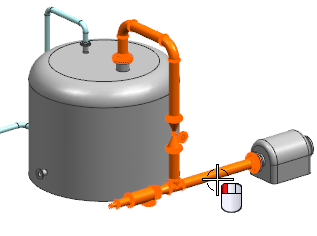
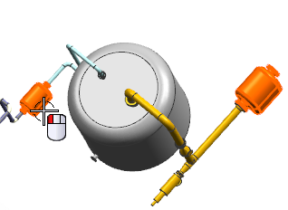
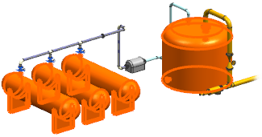

Select the content for each drawing sheet
In the Scope step, you select the primary and secondary content, as well as any parts to be excluded from the drawing booklet.
-
For the Primary Content, select DRF7_85_RUN_1.

Tip
You can also select any of the primary, as well as secondary or excluded content objects from the Assembly Navigator.
-
From the Drawing Template list, select:
-
A1 – Size – Blank (Millimeters)
-
-
Make sure the Apply Template to All Drawing Parts check box is selected.
-
Under Secondary Content, click Select Object
 .
.
-
Select the two pumps.

These pumps will appear as secondary content in all of the drawing sheets in the booklet.
-
Under Excluded Content, click Select Object
.
-
Select the four storage tanks.

The storage tanks will not appear in any of the drawing sheets.